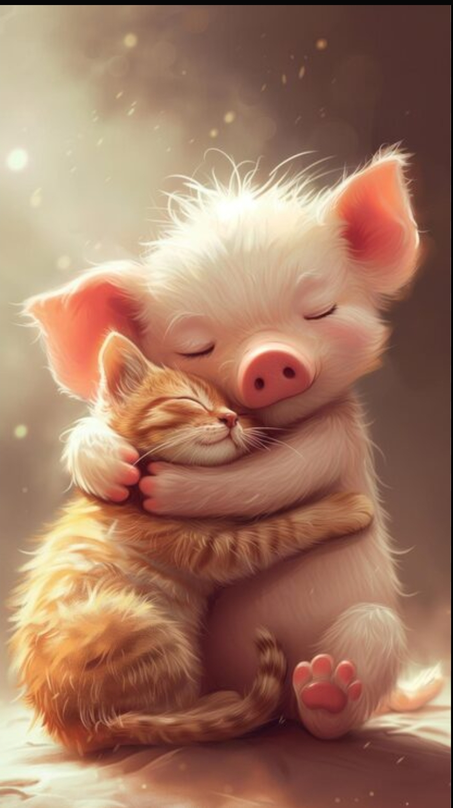

Pigiiiii ❤️
Napravila sam ovaj gift za tebe.
Pigi moj lepi...
Hvala ti puno za svaki trenutak koji provedemo zajedno,
ti si moja omiljena osoba i niko nikad ne može da mi te zameni
Najbolje mi je kad si ti tu, tad je sve nekako lakše...
Previše sam srećna što se viđamo i čujemo svaki dan i volela bih da tako ostane i na dalje🤞🏽
Da znaš da uvek mislim na tebe i jedva čekam da te opet vidim🥰
I da mi se previše sviđaš pig hehehe
pusa oinkie💋
